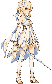
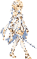
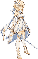
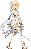
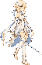

新母版 / 四帧行走 / 独立前冲
制作候选，尚未用户美术验收。旧行走和旧母版作废；本批重画站姿、四个行走关键姿势和四个前冲姿势。跳跃、攻击、防御等其他身体仍待按新母版统一。
同一母版独立生成每帧；统一源图比例与脚底基准，不按每帧包围框单独拉伸。前冲距离沿用约255逻辑单位。
新母版（同尺度拟合）

新母版原图 · 完整提示词 · 来源/比例/锚点/图元 · 研究依据与未完成项
行走逐帧：从同一髋部追踪腿
1 近侧腿落地在前

原图 · 姿势参考
2 近侧腿支撑，远侧腿经过

原图 · 姿势参考
3 远侧腿落地在前

原图 · 姿势参考
4 远侧腿支撑，近侧腿经过

原图 · 姿势参考
前冲逐帧